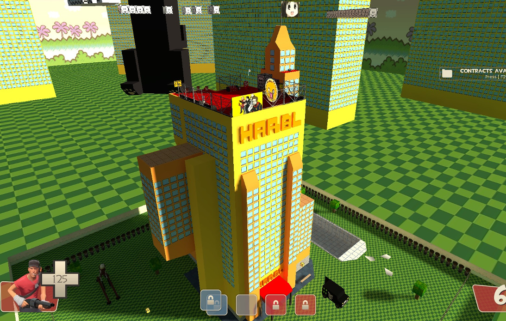

The Internet is Serious Business!
Home > Video Games > PC > Team Fortress 2 > The Greatest Map Ever Made

That map would be Harbl Hotel, of course.
This is a rather old Control Point map made by a fellow named Xenon. In addition to the map itself, he also recorded a video walkthrough in which he gives tips and reveals secrets for it; these original walkthroughs have been re-uploaded by someone else to YouTube (see also part 2 and part 3).
This is definitely a map that appeals to old 4chan and old /b/ culture: almost all of the images that are found inside the main building are (if I had to give a date) pre-2008 4chan /b/ memes. Even the map itself is based on a real hotel that's been raided regularly as part of a long-standing /b/ tradition. There are even two pools in the map, both of which slowly damage you if you jump into them. Why? Because they have AIDS, of course!
As Harbl Hotel would appear very strange to anybody who isn't a 4chan regular—or even to all but the old /b/tards—its appeal is, of course, rather limited. I have only known about three Team Fortress 2 servers that actually run or ran the map: the original Desuroom (the one established by JTFish), which ran the map 24/7; the 4CHAN PARTY VAN, which had it as part of its map rotation; and the current Desuroom Revival, with IP address 162.248.88.175:27015, which also runs the map 24/7. Since 2010 (when I first discovered it), I have played on this map for many, many hours, mostly back on the original Desuroom when it was still up and running, so I know it very well. It is my favorite Team Fortress 2 map, if I haven't already made that clear.
However, I am not going to describe the map in detail here, because I think it is better that you download it and experience it for yourself. I will mention some of the map's highlights, though: a disco room with a DJ booth offering a selection of 16 songs that can be played, and that can be heard throughout the entire map; a handful of interactive flying vans; many buttons scattered here and there that teleport you to various places on the map, including the skybox; and the ability to flood most of the map. If you want to play Harbl Hotel, as of February 2021, the only server of which I am aware that runs the map 24/7 is the Desuroom Revival I mentioned in the previous paragraph.


 All written materials on this Web site are my own, and all are released under the Do What the Fuck You Want to Public License Version 2.
All written materials on this Web site are my own, and all are released under the Do What the Fuck You Want to Public License Version 2.
This page last modified on 29 March 2021.